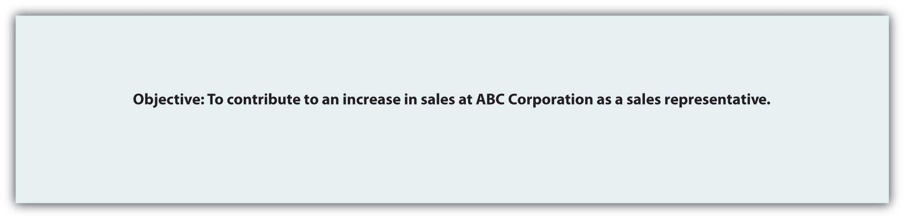
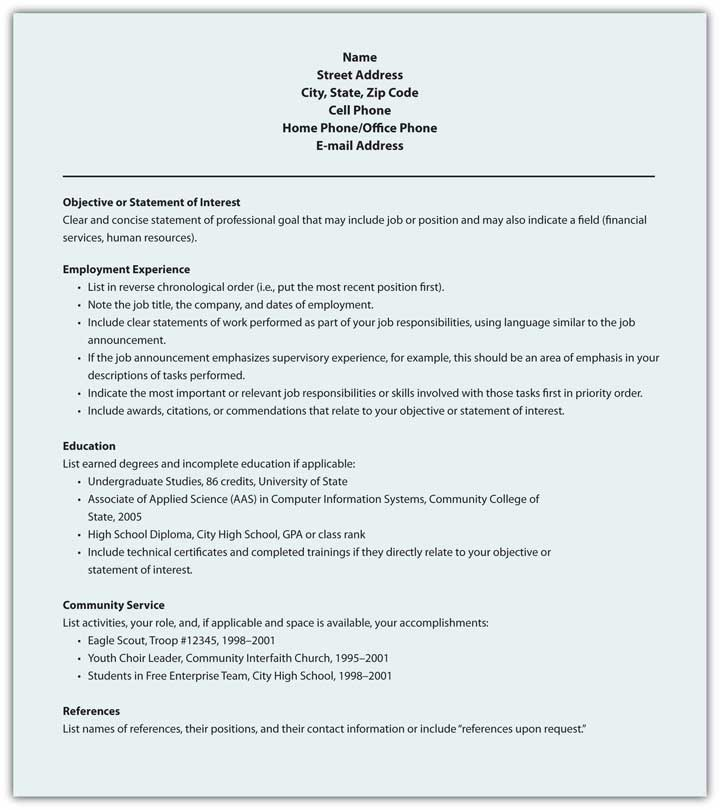
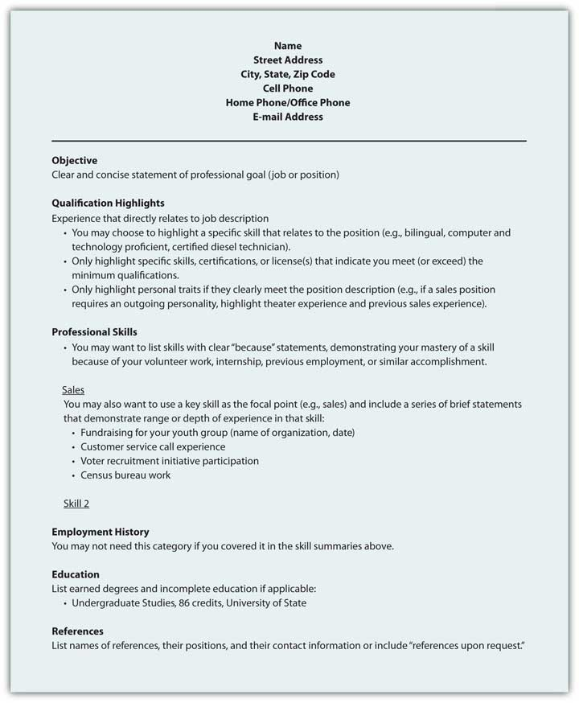
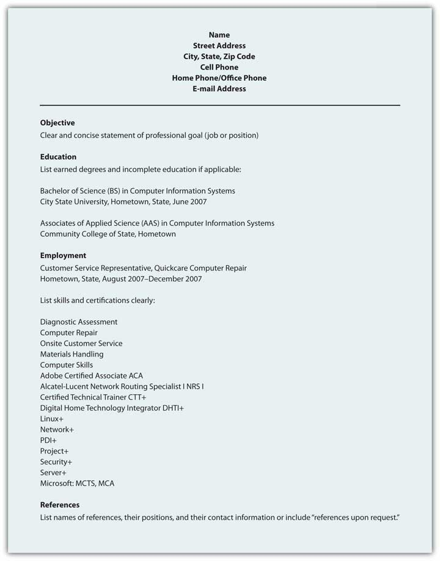

A résuméDocument that summarizes your education, skills, talents, employment history, and experiences in a clear and concise format for potential employers. is a document that summarizes your education, skills, talents, employment history, and experiences in a clear and concise format for potential employers. The résumé serves three distinct purposes that define its format, design, and presentation:
An online profile page is similar to a résumé in that it represents you, your background and qualifications, and adds participation to the publication. People network, link, and connect in new ways via online profiles or professional sites like LinkedIn. In many ways, your online profile is an online version of your résumé with connections and friends on public display. Your MySpace and Facebook pages are also often accessible to the public, so never post anything you wouldn’t want your employer (current or future) to read, see, or hear. This chapter covers a traditional résumé, as well as the more popular scannable features, but the elements and tips could equally apply to your online profile.
Regardless of the format, employers have expectations for your résumé. They expect it to be clear, accurate, and up to date.Bennett, S. A. (2005). The elements of résumé style: Essential rules and eye-opening advice for writing résumés and cover letters that work. AMACOM. This document represents you in your absence, and you want it to do the best job possible. You don’t want to be represented by spelling or grammatical errors, as they may raise questions about your education and attention to detail. Someone reading your résumé with errors will only wonder what kind of work you might produce that will poorly reflect on their company. There is going to be enough competition that you don’t want to provide an easy excuse to toss your résumé at the start of the process. Do your best work the first time.
Résumés have several basic elements that employers look for, including your contact information, objective or goal, education and work experience, and so on. Each résumé format may organize the information in distinct ways based on the overall design strategy, but all information should be clear, concise, and accurate.Simons, W., & Curtis, R. (2004). The Résumé.com guide to writing unbeatable résumés. New York, NY: McGraw-Hill.
This section is often located at the top of the document. The first element of the contact information is your name. You should use your full, legal name even if you go by your middle name or use a nickname. There will plenty of time later to clarify what you prefer to be called, but all your application documents, including those that relate to payroll, your social security number, drug screenings, background checks, fingerprint records, transcripts, certificates or degrees, should feature your legal name. Other necessary information includes your address, phone number(s), and e-mail address. If you maintain two addresses (e.g., a campus and a residential address), make it clear where you can be contacted by indicating the primary address. For business purposes, do not use an unprofessional e-mail address like sexiluvr93@hotmale.com or tutifruti@yafoo.com. Create a new e-mail account if needed with an address suitable for professional use.
Figure 9.7 Sample Contact Information

This is one part of your résumé that is relatively simple to customize for an individual application. Your objective should reflect the audience’s need to quickly understand how you will help the organization achieve its goals.
Figure 9.8 Sample Objective
You need to list your education in reverse chronological order, with your most recent degree first. List the school, degree, and grade point average (GPA). If there is a difference between the GPA in your major courses and your overall GPA, you may want to list them separately to demonstrate your success in your chosen field. You may also want to highlight relevant coursework that directly relate to the position.
Figure 9.9 Sample Education Field

List in reverse chronological order your employment history, including the positions, companies, locations, dates, duties and skills demonstrated or acquired. You may choose to use active, descriptive sentences or bullet lists, but be consistent. Emphasize responsibilities that involved budgets, teamwork, supervision, and customer service when applying for positions in business and industry, but don’t let emphasis become exaggeration. This document represents you in your absence, and if information is false, at a minimum you could lose your job.
Figure 9.10 Sample Work Experience

Table 9.5 Types of Résumés
| Type | Function | Advantage | Disadvantage |
|---|---|---|---|
| 1. Reverse Chronological | Reverse chronological résumés (also called reverse time order) focus on work history. | Demonstrates a consistent work history | It may be difficult to highlight skills and experience. |
| 2. Functional | Functional résumés (also called competency-based résumés) focus on skills. | Demonstrates skills that can clearly link to job functions or duties | It is often associated with people who have gaps in their employment history. |
| 3. Combination | A combination résumé lists your skills and experience first, then employment history and education. | Highlights the skills you have that are relevant to the job and provides a reverse chronological work history | Some employers prefer a reverse chronological order. |
| 4. Targeted | A targeted résumé is a custom document that specifically highlights the experience and skills that are relevant to the job. | Points out to the reader how your qualifications and experience clearly match the job duties | Custom documents take additional time, preparation, analysis of the job announcement, and may not fit the established guidelines. |
| 5. Scannable | A scannable résumé is specifically formatted to be read by a scanner and converted to digital information. | Increasingly used to facilitate search and retrieval, and to reduce physical storage costs | Scanners may not read the résumé correctly. |
You may choose to include references at the end of your résumé, though “references upon request” is common. You may also be tempted to extend your résumé to more than one page, but don’t exceed that limit unless the additional page will feature specific, relevant information that represents several years of work that directly relates to the position. The person reading your résumé may be sifting through many applicants and will not spend time reading extra pages. Use the one-page format to put your best foot forward, remembering that you may never get a second chance to make a good first impression.
Just as there are common search terms, and common words in relation to each position, job description, or description of duties, your scannable résumé needs to mirror these common terms. Use of nonstandard terms may not stand out, and your indication of “managed employees” may not get the same attention as the word “supervision” or “management.”
If a job description uses specific terms, refers to computer programs, skills, or previous experience, make sure you incorporate that language in your scannable résumé. You know that when given a class assignment, you are expected to follow directions; similarly, the employer is looking for specific skills and experience. By mirroring the employer’s language and submitting your application documents in accord with their instructions, you convey a spirit of cooperation and an understanding of how to follow instructions.
Consider a brief section that lists common words associated with the position as a skills summary: customer service, business communication, sales, or terms and acronyms common to the business or industry.
You need to make sure your résumé is easy to read by a computer, including a character recognition program. That means no italics, underlining, shading, boxes, or lines. Choose a sans serif (without serif, or decorative end) font like Arial or Tahoma that won’t be misread. Simple, clear fonts that demonstrate no points at which letters may appear to overlap will increase the probability of the computer getting it right the first time. In order for the computer to do this, you have to consider your audience—a computer program that will not be able to interpret your unusual font or odd word choice. A font size of eleven or twelve is easier to read for most people, and while the computer doesn’t care about font size, the smaller your font, the more likely the computer is to make the error of combining adjacent letters.
Use a laser printer to get crisp letter formation. Inkjet printers can have some “bleed” between characters that may make them overlap, and therefore be misunderstood. Folds can make it hard to scan your document. E-mail your résumé as an attachment if possible, but if a paper version is required, don’t fold it. Use a clean, white piece of paper with black ink; colors will only confuse the computer. Deliver the document in a nine-by-twelve-inch envelope, stiffened with a sheet of cardstock (heavy paper or cardboard) to help prevent damage to the document.
Figure 9.11 Sample Format for Chronological Résumé
Figure 9.12 Sample Format for Functional Résumé
Figure 9.13 Sample Format for Scannable Résumé
A résumé will represent your skills, education, and experience in your absence. Businesses increasingly scan résumés into searchable databases.